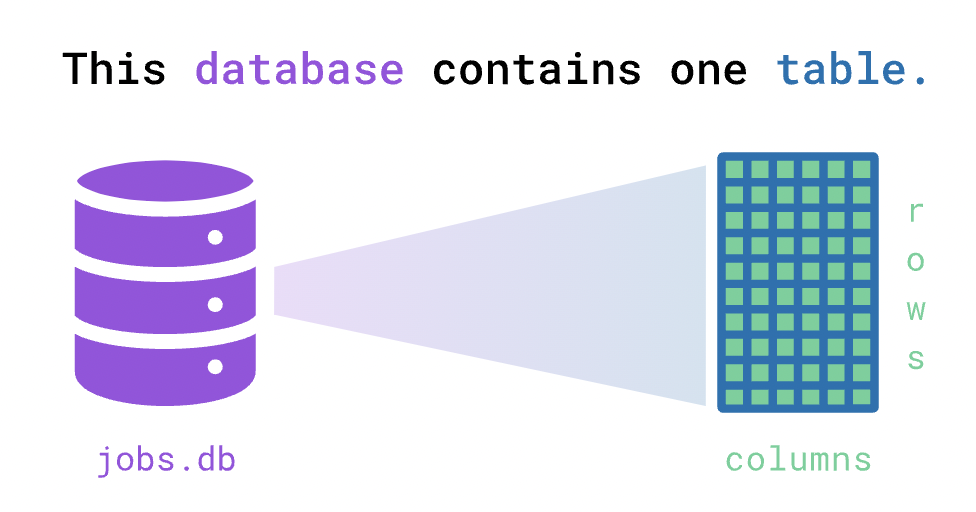
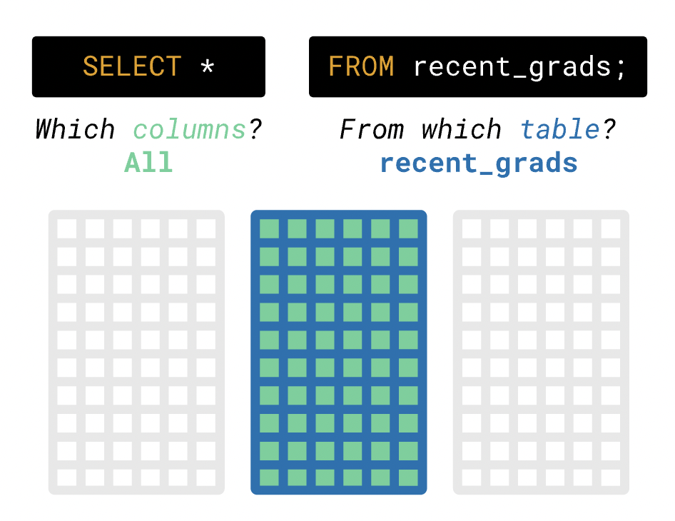

Update
- Group is formed
- Review the previous lecture (intro to data cleaning)
- homework will assist you accordingly
Today: Fundamental of Database
Structured Query Language, SQL
- One of the most popular technologies used by data professionals
- Understanding the fundamentals of a more general-purpose language like Python or R is critical for working with data
- but knowing SQL helps data professionals do more with their data
A few takeaways
- SQL enables us to pull data from many sources
- data is distributed across many sources
- allows us to structure our data in a way that makes it accessible from one place
- SQL data is structured into multiple, connected tables
- Let's learn about the language itself and how you can use it to query data
- Discuss why we need to learn this
Database
- When we work with data, we load the data from files like spreadsheets
- We may run into problems:
- What if the data is too big to fit into a single spreadsheet file?
- What if you share the data with team members and keep it updated?
- What if there's sensitive information in your data that needs protection?
- Thankfully, these problems already have a solution: the database
- A database can store much more data more securely than a spreadsheet or a text file
- Unlike simply opening a spreadsheet, we actually have to ask for data from the database
- We primarily interact with a database using a database management system (DBMS)
- a computer program to help users interact with data by giving the computer instructions through the DBMS
- We'll begin learning SQL with the DBMS SQLite

- Explore data from the American Community Survey on job outcome that we loaded into a SQL database
- a database, jobs.db, loaded with this data into a single table named recent_grads
- Consider the SQL instruction (usually called a query)
SELECT * FROM recent_grads;
This query selects all columns from the recent_grads table
To run the query above in our interface, type the following code in the R script
library(RSQLite)
setwd("set your working directory")
con <- dbConnect(SQLite(), 'jobs.db')
dbListTables(con)
dbGetQuery(con, 'SELECT * FROM recent_grads')
This will run the query against the database, display the results, and give feedback on your answer
- The process you used to visualize recent_grads breaks down into two steps:
- Write a SQL query that expresses the request "fetch all the data in the table."
- Ask the SQLite DBMS software to run the code and display the results
dbGetQuery(con, 'SELECT * FROM recent_grads;')
- SELECT * — the symbol * selects all the columns
- The table we wanted to query using FROM recent_grads
The order and space are crucial features of SQL syntax

- You may have noticed that SELECT and FROM use uppercase letters, but not required
- Also, not sensitive to the line change and indentation
- Confirm that lines changes, capitalization, and indentation aren't crucial for the query to run
- SQL allows us to limit the number of rows we see by using the LIMIT clause
- Think of a clause as an optional reserved word that doesn't need to be in the code for the query to execute successfully
dbGetQuery(con,
"SELECT * FROM recent_grads LIMIT 3;")
Often, we'll only want to look at data from specific columns
dbGetQuery(con,
"SELECT Major, Major_category FROM recent_grads;")
- SQL is a database-dependent language
- the SQL that you're learning here (for SQLite) isn't the same as SQL for other DBMSs, like PostgreSQL or Oracle
- however, the different versions of SQL are more alike than they are different
- for example, in T-SQL (Microsoft's SQL flavor), we would write the query above like this:
SELECT TOP 3, * FROM recent_grads;
- Let's use SQL to answer a more specific question
- which majors were mostly women?
- Want the following subset
- only the Major columns
- only the rows where ShareWomen is greater than 0.5 (corresponding to 50%)
- We can use the WHERE statement
- the column we want the database to filter on: ShareWomen
- A comparison operator that specifies how we want to compare a value in a column: >=
- The value against which we want the database to compare each value: 0.5
SELECT Major
FROM recent_grads
WHERE ShareWomen >= 0.5;
- We express the specific column we want in the SELECT part of the query and the specific rows we want in the WHERE part
- Note that most database systems require that the SELECT and FROM statements come first, before WHERE or any other statements
- Interpret the following code:
SELECT Major
FROM recent_grads
WHERE Major_category == 'Engineering';
We can also use the AND operator to combine multiple filter criteria
SELECT Major
FROM recent_grads
WHERE Major_category == 'Engineering'
AND ShareWomen > 0.5;
- OR operator works similiary
SELECT [column1, column2, ...]
FROM [table1]
WHERE [condition1]
OR [condition2]
Evaluate logical operators: theory and practice
WHERE Major_category = 'Engineering'
AND ShareWomen > 0.5
OR Unemployment_rate < 0.051
WHERE (Major_category = 'Engineering'
AND ShareWomen > 0.5)
OR (Unemployment_rate < 0.051)
Leaving the parentheses out implies that we want the calculation to happen from left to right in the order we wrote the logic
- We may want more control over the ordering of the results
- We can specify the order using the ORDER BY clause
- e.g. we may want to understand which majors that met the criteria in the WHERE statement had the lowest unemployment rate
SELECT Rank, Major, Major_category, ShareWomen, Unemployment_rate
FROM recent_grads
WHERE (Major_category = 'Engineering')
AND (ShareWomen > 0.5 OR Unemployment_rate < 0.051)
ORDER BY Unemployment_rate;
- This will return the results in ascending order (increasing) by the Unemployment_rate column
ORDER BY Unemployment_rate DESC;
- Let's practice going from question to answer using the SQL workflow
- Which engineering majors had the highest full time employment rates?
- Write a query that returns the Engineering or Physical Sciences category, the major, and unemployment rate, listed in ascending order of unemployment rate
- The results should only contain the Major_category, Major, and Unemployment_rate columns, in that order
- Remember to list the results in ascending order of unemployment rate
SELECT Major_category, Major, Unemployment_rate
FROM recent_grads
WHERE Major_category = 'Engineering' OR Major_category = 'Physical Sciences'
ORDER BY Unemployment_rate;
Now, think about why we need to learn SQL
If the only purpose is to manipulate data, why do we need it?
Remember the first command dbConnect()
Send the queries to fetch data and work on your machine
Send the quries to fetch the subset of data would be much more efficient
Very popular in the Cloud world